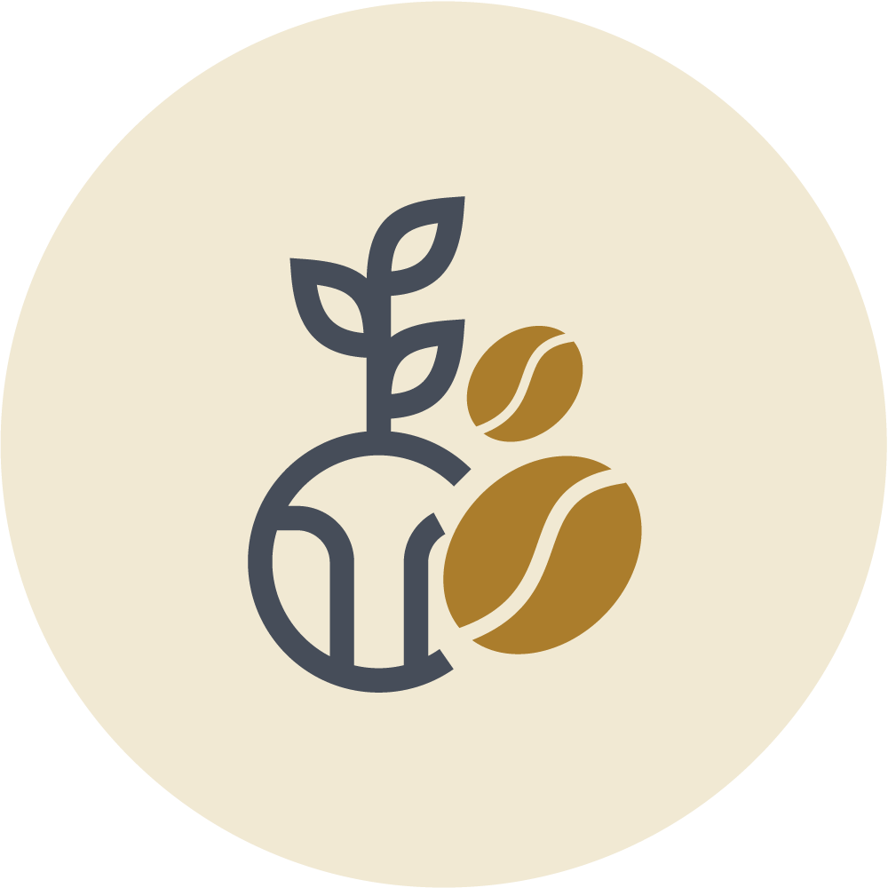
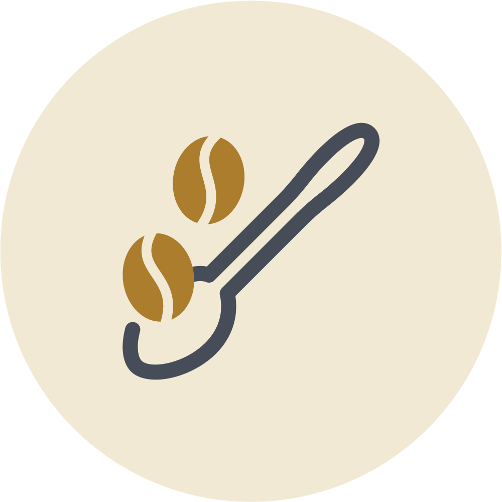
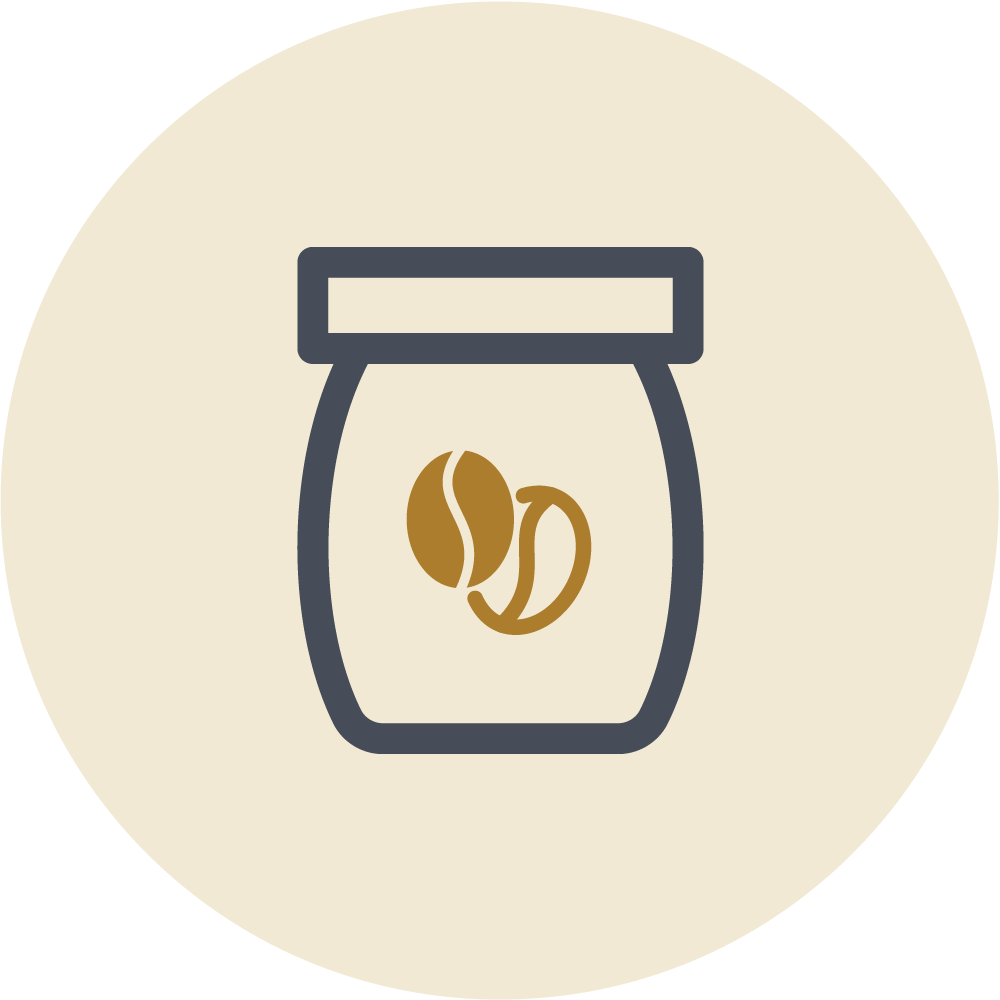
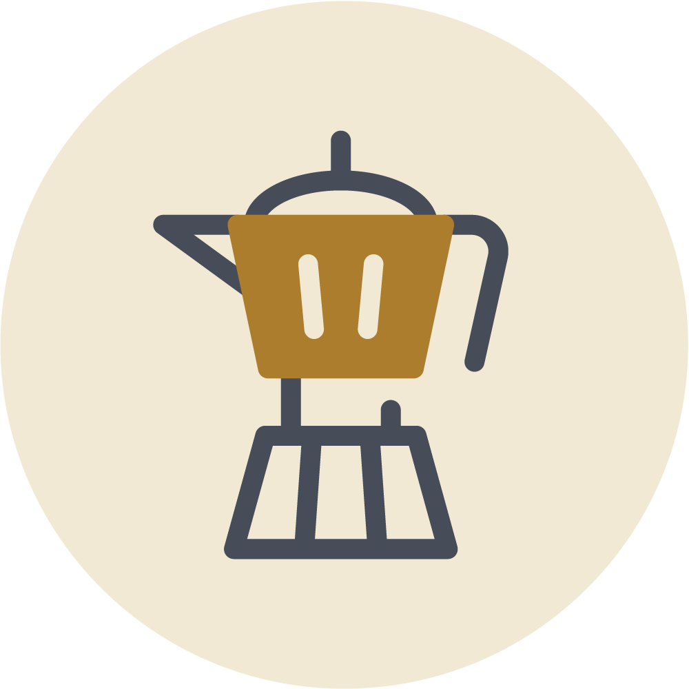
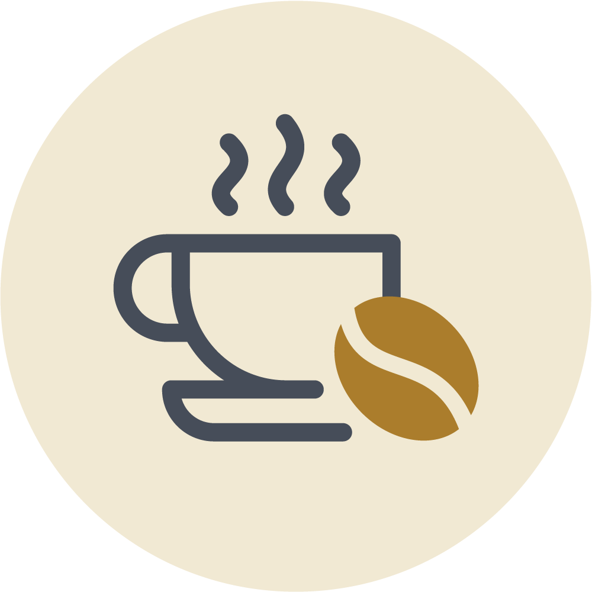
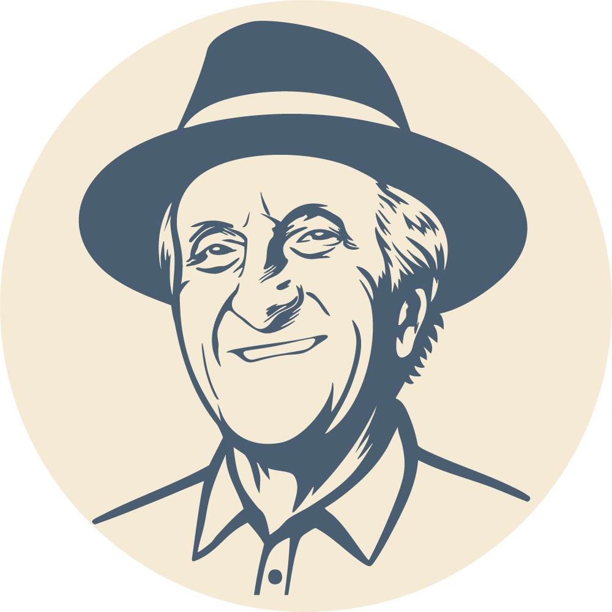
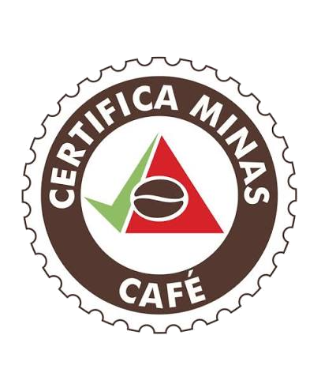

{{ t.histP1a }}Antônio Fortes Bustamante{{ t.histP1b }}
{{ t.histP2a }}José Otávio, Cláudia e Cristiana{{ t.histP2b }}Fortes Bustamante Agronegócios{{ t.histP2c }}

{{ t.farmsText }}
{{ t.f1desc }}
{{ t.f2desc }}
{{ t.f3desc }}
{{ t.procText }}

{{ t.step1d }}

{{ t.step2d }}

{{ t.step3d }}

{{ t.step4d }}

{{ t.step5d }}
{{ t.card1d }}
{{ t.card2d }}
{{ t.card3d }}
{{ t.awText }}

{{ t.certDesc }}

{{ t.contText }}